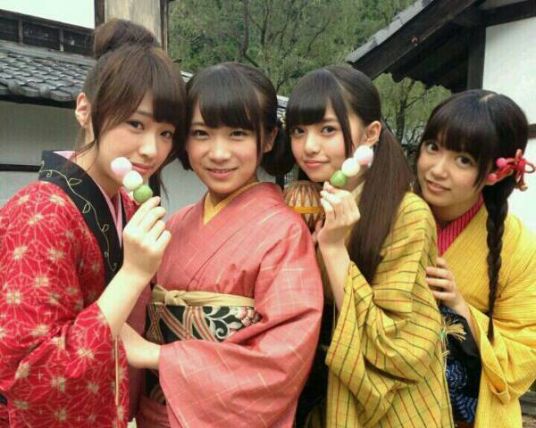

| 2013/11 07 Thu | ひめたん(*>ω<*)そ の365 |

月の大きさ MV公開されました！
おさげの町娘がひめたんです＼(^O^)／
がんばってみつけてみてね！
着物は慣れないのもあってか苦しくて
うおーやばーいーってなりながら着ました♪
着物が似合う人ってステキだよね
この撮影は
町娘さんのシーン、くノ一さんのシーンみたいに
シーンごとに撮っていく感じだったので
丸一日 町娘さんたちと一緒に過ごしたんだよー
楽屋も基本的に一緒。
この撮影で３人とはさらーに仲良くなりました◎
＼ 町娘さんちーむ ／

今日はBUBKAさんに取材していただきましたっ
なんと、ひめたんなんと、
ひとりで雑誌の取材していただくのは
初めてなんです＼(^o^)／
たくさんお話して
写真も撮っていただきましたー
テーマは「ギャップ」かな♪
11月29日発売です！
そうそう、
お手紙とプレゼント受け取りましたので報告。
お手紙はお風呂入ってから
あとでじっくり読もうと思います(*´ω`*)るん
プレゼントも一生懸命選んでくださったんだなって
照れちゃう。うれしゅう気持ち///
大事にします本当にありがとーう！
いつもコメントありがとうございます
いくちゃんとの
デュエット何歌ったのー？
って質問がとーっても多かったのでさらっとお答え
ライオン
 (May'nさん中島愛さん)
(May'nさん中島愛さん)

 メンバーって自分の生写真は全部持ってるの？
メンバーって自分の生写真は全部持ってるの？
もしかしてフルコンプ？？
持ってないよー！
川後さん (川後陽菜ちゃん)とか
毎月BLTさんのNOGICAMERA楽しみにしてるよー♪
あ！そいえば今月はひめたん当番だよー
みんなよろしくねー＼(^o^)／
ひめたんは授業受けるとき
ノート派？ルーズリーフ派？それとも乃木坂派？
ノート派(即答)
ひめ！目玉焼きはなにかける派か教えてちょ！
オタフクソース派！
広島名物なんだけど、とっても美味しいのー
何にでも大体合うよ☆
気になったらお取り寄せしてみてねっ
ひめたんが可愛いすぎるのが最近の悩み
推し変してしまいそう！
こういう時はどおしたらいいのかなぁ?
ひめたんは嬉しいけどー
推し増...とかどうかしら(*´ω｀*)
えーほんとに嬉しい。ありがとーう！
ちなみに可愛さなんて微塵もないんだから
お願い悩まないでー
中元さんは広島弁の「ぶち〜」と「ぼれぇ〜」
の言葉どっち使ってますか？
「ばり」派でした(笑)
ばり美味しい！ばりたいぎい！とかねー
広島弁はいろいろあるから難しいよね
ひめたんと まあや (和田まあやちゃん)でも
使う言葉が違うのです
ひめたんが、写真集の撮影で
一番苦労したことは？
何日かお泊りしたんだけど、１日目の夜に
ホームシックになったことかな(´・_・｀)
楽器が出来る異性ってどう思う？
ステキだと思います！
ひめたんはできない人だから
なんか尊敬しちゃう☆

スキンケア一式
Kiehl'sの美白ラインに変えてみた！
調子よかったらまた報告するねー♪
(＊´・ω・＊)
コメント(346)
2013/11/07 23:00